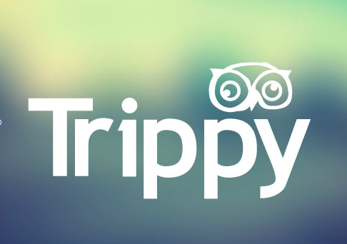

{% capture site_tags %}{% for tag in site.tags %}{{ tag | first }}{% unless forloop.last %},{% endunless %}{% endfor %}{% endcapture %}
{% assign tags_list = site_tags | split:',' | sort %}

   <article>
      <div class = "project-wrapper">
         
         <div class="project-txt">
            <h3 class="project-heading">Koan - Hack the North 2016</h3>
            Koan is a panic attack intervention app using a Muse EEG headband and real-time processing to detect panic attacks and notify users before symptoms become severe. Koan was built using a microservices architecture, and incorporates Firebase, Node.js, Ruby on Rails, and a JavaScript front with the Twillio messaging API. This was a four person project built in Waterloo, Canada.
         </div>
      </div>
      <div class="project-wrapper">
         
         <div class="project-txt">
            <h3 class="project-heading">Trippie - WuHack 2015</h3>
            Trippie is a game based on the Trip Advisor API and designed around Trivia Crack. Users are given a random review from across the globe and try to match it with the correct country. It also provides Google Maps visualization of the review location compared with where the user guessed. This project was built in collaboration with four other students and finished top five at WuHack 2015.
         </div>
      </div>
      <div class = "project-wrapper">
         
         <div class="project-txt">
            <h3 class="project-heading">WeatherVibe</h3>
             WeatherVibe is a Django application exploring the effect of weather on moods of people across the country. Using the Twitter API, sentiment analysis, and weather information, we created a dashboard to interactively view the attitude of posts in real-time. WeatherVibe began at Hack Illinois as a four person project and was continued personally.
         </div>
      </div>
      <div class = "project-wrapper">
         
         <div class="project-txt">
            <h3 class="project-heading">Automatic Detection of Alcohol Use - MU Research</h3>
             In collaboration with graduate computer science students, we explored the application of machine learning algorithms and statistical analysis to predict use of alcohol given physiological data such as accelerometer, heart rate, and breath rate. I worked on automated data retrevial and pre-processing of phisiological signals.
         </div>
      </div>
   </article><!-- /.hentry -->


